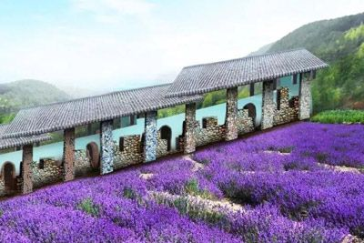

中国瓷天下位于福州闽清东桥，拥有积淀四千多年的陶瓷文化底蕴。在宋时，是中国陶瓷出口销量很大、分布世界范围最广的海丝源头，目前已被福建省政府纳入“海丝申遗备选点”。
这是一个充满异域风情与无限创意、无限萌趣、无限欢乐的全国首创“海丝文创旅游景区”。
它以“小精灵带你体验数千年海丝历史文化与两万里海丝瓷路风情”为主线，通过看五大创意爆品景观（两万平梦幻星空大地艺术画、九栋超豪华动物别墅、一座名瓷彩窑、两座福建瓷屋、一个青瓷巨碗）；赏“三场海丝主题演艺+两场精灵show+亚非欧风情”；玩“新鲜与古早两级亲子游乐+亚非两地生活体验+陶艺、古早、碟海星空三大文创DIY”；学众多海丝科普知识与瓷路拓展等多种创新、趣味形式，带领人们游历奇妙的海丝旅程。
